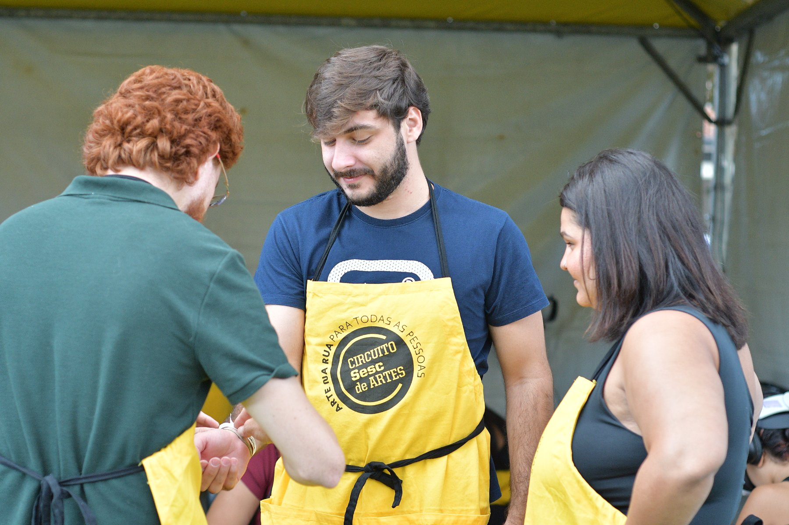

Produtos e serviços
O que a VERS entrega
A instituição contrata um serviço ou um produto da VERS para exibir uma obra. Cada frente abaixo diz o que é, como contratar e onde já aconteceu.
Como ler a VERS
- Obra
- O que o público vive.
- Catálogo
- As obras em circulação, reunidas pelo VERS Apresenta.
- Serviço
- O que a VERS faz, com equipe e equipamento, para exibir uma obra.
- Produto
- O software da VERS que gerencia óculos, sessões e público.
- Projeto
- A prova: quem contratou, qual frente, qual obra e o que aconteceu.
ObraVerbo 01
Produzir
A VERS faz a obra.
Quando a VERS cria: concebe, dirige, desenvolve e realiza. É o verbo da obra autoral própria.
- Pesquisa e direção criativa
- Design narrativo e de experiência
- Direção de arte e som espacial
Como contratar
- Você contrata
- Comissionamento: criação e produção de obra autoral em XR
- Você recebe
- Uma obra autoral
Projetos relacionados
CatálogoVerbo 02
Distribuir
A VERS leva a obra a circular.
Quando a VERS escolhe uma obra, negocia seus direitos, adapta sua apresentação a um território e estabelece as condições para que ela circule. É o verbo do VERS Apresenta.
- Curadoria nacional e internacional
- Licenciamento e localização cultural
- Estratégia de circulação
Prova Festival Varilux de Cinema Francês: 7.500 pessoas por edição, em média
Como contratar
- Você contrata
- VERS Apresenta: distribuição curatorial e licenciamento
- Você recebe
- Obras do catálogo, com licença e adaptação ao território
Projetos relacionados
ServiçoVerbo 03
Materializar
A VERS leva equipamento e equipe.
Quando a VERS dá forma pública à obra: estrutura, implanta e opera a experiência imersiva em contexto real, diante do público. É o verbo da obra em exibição.
- Infraestrutura e implantação XR
- Fluxo de público e formação de equipe
- Manutenção e supervisão de temporada
Prova Uma Noite com os Impressionistas: 120 óculos simultâneos
Como contratar
- Você contrata
- Operação: implantação e operação de exposições XR
- Você recebe
- A obra em exibição, com equipamento e equipe
A VERS assume a produção expositiva completa: cenografia, ambientação, direção de arte, desenho de fluxo, formação da equipe local, protocolos de atendimento, manutenção e supervisão ao longo da temporada. Quando o projeto envolve sistema proprietário, a operação é integrada à equipe criadora da obra, sem perder capacidade de execução local.

Ficha técnica de referência
- Formato
- Free-roaming · até 12 pessoas simultâneas
- Duração
- 18 minutos por sessão
- Área mínima
- 180 m² livres, pé-direito 3,5 m
- Equipamento
- 12 headsets standalone + estação de higienização
- Equipe
- 1 supervisor · 4 mediadores por turno
- Idiomas
- Português, inglês e espanhol
- Acessibilidade
- Audiodescrição e legendagem em LIBRAS
ProdutoVerbo 04
GerenciarNovo
A VERS entrega o software.
Quando a VERS entrega a tecnologia que mantém a obra funcionando: um software próprio que orquestra os óculos, as sessões e o público. É o verbo da operação em escala.
- Orquestração de óculos e dispositivos
- Controle de sessões e fluxo de público
- Proteção de dados e controle de acesso
Como contratar
- Você contrata
- Software de gestão da VERS
- Você recebe
- Orquestração de óculos, sessões e público
Projetos
As operações em que a VERS atua em escala estão em Projetos.